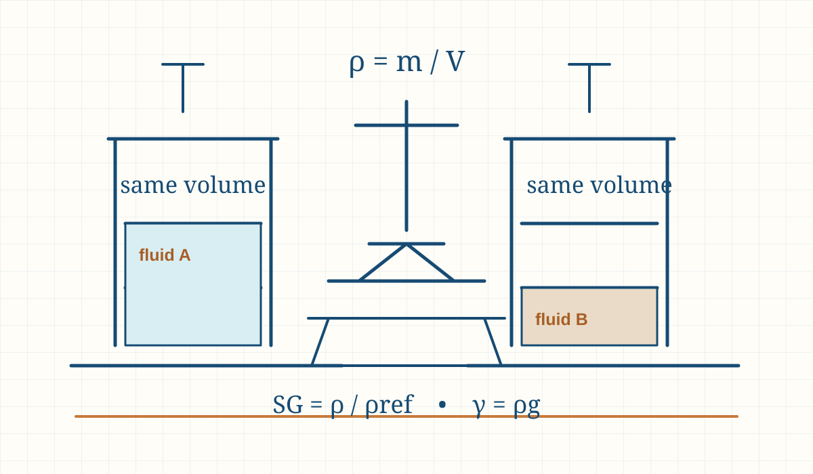
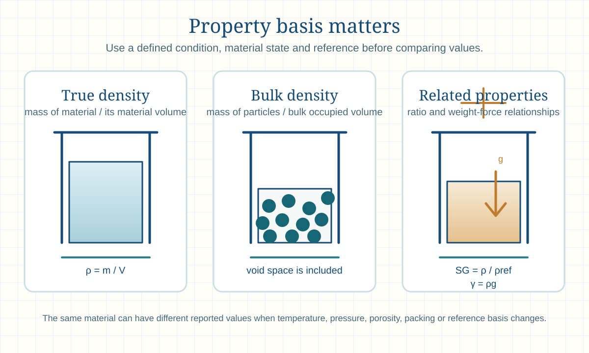

Engineering principle
Density, Specific Gravity and Specific Weight: Principles, Formulae and Industrial Applications
Density is mass per unit volume, specific gravity compares a stated density with a reference density, and specific weight is weight force per unit volume. These properties support fluid, bulk-solid and preliminary equipment calculations when their condition basis is declared.

- Content type
- Engineering principle
- Level
- Engineering › Fluid Mechanics, Piping, Pumps, Fans and Ducts › Fluid Properties › Density and Specific Gravity › Density, Specific Gravity and Specific Weight
- Audience
- Student · Design engineer · Project engineer · Plant engineer
- Last reviewed
- 30 August 2026
What Are Density, Specific Gravity and Specific Weight?
Density, represented by ρ (rho), is mass per unit volume. Specific gravity (SG), also called relative density in many contexts, compares the density of a material with the density of a stated reference substance. Specific weight, represented by γ (gamma), is the gravitational force per unit volume. The three properties are related, but they are not interchangeable.
Density has units such as kg/m³. Specific gravity is a ratio and therefore has no unit when the two densities use compatible units. Specific weight has force-per-volume units, normally N/m³ or kN/m³. A correct engineering calculation begins by naming which property is needed, the material state, and the temperature, pressure and reference basis where applicable.
The same material can have more than one reported density. A liquid density may change with temperature; gas density depends strongly on pressure and temperature; and a particulate solid may be described by particle, apparent, bulk or tapped density depending on whether the void space between particles is included. A handbook value is useful only when its definition matches the engineering question.
Why Are These Properties Important in Engineering?
Density connects mass and volume, which makes it central to material balances, tank inventory, hydrostatic head, pump duty, heat-transfer mass flow, storage capacity and process calculations. Specific gravity is convenient because it shows whether a liquid is lighter or heavier than its stated reference without repeatedly writing a density value. Specific weight converts the same property into force per volume and is used directly in hydrostatics and structural loading discussions.
The consequences of using the wrong property can be practical: a tank volume may be converted to the wrong mass, a pump head calculation can use an incorrect liquid basis, a hopper capacity can be overstated by confusing particle density with bulk density, or a gas-flow result can be wrong because the temperature and pressure were not declared. These errors are often avoidable by documenting the property definition before calculations begin.
Key Terms and Definitions
- Mass, m
- Amount of matter. Use kilograms (kg) in SI calculations.
- Volume, V
- Occupied space. Use cubic metres (m³) for the base SI density relation.
- Density, ρ
- Mass divided by volume: kg/m³. For liquids and gases, state the operating condition.
- Specific volume, v
- Volume per unit mass. It is the reciprocal of density: v = 1/ρ.
- Specific gravity, SG
- Ratio of a material density to a stated reference density. It is dimensionless.
- Reference density, ρref
- The density selected for the denominator in a specific-gravity comparison. For liquids, water at a stated condition is common; the exact convention must be clear.
- Specific weight, γ
- Weight force per unit volume: γ = ρg. Its SI unit is N/m³ or kN/m³.
- True or particle density
- Density of the material itself, excluding inter-particle voids.
- Bulk density
- Mass of a particulate material divided by the total occupied bulk volume, including void space between particles.
- Tapped density
- Bulk density after a specified consolidation or tapping procedure. It should not be substituted for loose bulk density without confirming the service condition.
Fundamental Principle
At a defined condition, a denser material contains more mass in the same volume. The basic relationship ρ = m/V is simple, but its inputs must represent the same material sample and condition. For a liquid, the volume should correspond to the measured liquid temperature. For a gas, both pressure and temperature must correspond to the stated volume. For powders and granules, the chosen sample-preparation method determines whether the quoted volume includes voids.
Specific gravity removes units by comparing one density with another. It is useful for rapid comparison but can hide the condition basis if the reference is not stated. Specific weight adds gravitational acceleration to density, turning mass per volume into force per volume. In ordinary engineering work, standard gravity is often used for a preliminary result, while final work follows the governing code, local requirement and approved project basis.
Engineering interpretation and design basis
The property selected must match the physical volume in the engineering question. A vessel filled with liquid needs liquid density at storage temperature; a hopper needs bulk density at a defined packing condition; a gas holder needs density at its pressure and temperature. Particle density is not a safe replacement for bulk density because the void space can dominate a storage-volume or conveying calculation.
Specific gravity is useful only when its reference is explicit. In liquid work the reference is commonly water at a stated condition, but the convention should never be guessed. In gas work, a relative density may refer to dry air at a stated basis. The ratio is convenient for comparison, yet the original density remains necessary whenever mass, volume, pressure head or force per volume is calculated.
Formulae, Symbols and Units
Density
ρ = m / V
Use mass m in kg and volume V in m³ to obtain density in kg/m³.
Specific gravity
SG = ρ / ρref
Use compatible density units in numerator and denominator. SG has no unit and the reference material and condition must be identified.
Specific weight
γ = ρg
Use density in kg/m³ and gravitational acceleration g in m/s² to obtain N/m³.
Mass from a known volume
m = ρV
Use a density valid at the same condition as the quoted volume.
Hydrostatic pressure screening
p = ρgh = γh
For a static liquid, pressure difference depends on density, gravity and vertical depth h. This does not replace a complete vessel, piping or safety calculation.
Using the result in engineering work
Hydrostatic calculations require a consistent distinction between pressure, head and specific weight. A liquid with greater density creates a larger pressure difference for the same vertical height; however, pump head is often expressed as metres of the pumped liquid rather than a direct pressure value. Convert deliberately and identify the fluid whose density is being used.
For bulk solids, measured mass divided by a container volume produces a condition-specific bulk density. The result can change with filling method, vibration, aeration, moisture, segregation and consolidation. It is better to report “loose bulk density at stated test condition” than a single unqualified density that later becomes a false design constant.
Assumptions and Validity Range
- Mass and volume represent the same material sample and stated condition.
- The sample is homogeneous where true density is used, or the bulk packing state is deliberately defined where bulk density is used.
- Temperature, pressure, moisture content and composition are suitable for the selected property value.
- The specific-gravity reference substance and reference condition are known.
- The gravity value is appropriate to the intended level of calculation.
- The result is used as educational or preliminary guidance, not as a replacement for laboratory testing, vendor data, code compliance or qualified engineering review.
Factors Affecting Density, Specific Gravity and Specific Weight
Temperature
Most liquids expand as temperature rises, lowering density. The effect can be important for inventory conversion, metering and hot-process services.
Pressure
Gas density changes strongly with pressure and temperature. Liquids are much less compressible, but high-pressure or high-accuracy work may still need approved data.
Composition and purity
Alloy grade, concentration, dissolved solids, entrained gas, moisture and contaminants can change a reported property from a handbook value.
Phase and condition
Solid, liquid and vapour phases have different densities. A value for one phase must not be transferred to another without a defined model.
Particle size and packing
Bulk-solid density changes with particle-size distribution, shape, moisture, vibration, consolidation, segregation and how the container is filled.
Reference convention
Specific gravity only communicates a useful comparison when the selected reference density and reference condition are recorded.
Types, Classifications and Operating Cases
True density
Use for a homogeneous liquid, solid material or particle material when inter-particle voids are excluded. It supports material-property and mass/volume work.
Bulk density
Use for storage, handling and hopper-capacity estimates when the occupied volume includes void space. Specify loose, as-filled or consolidated condition.
Tapped density
Use only where a stated tapping or compaction procedure applies. It indicates packing after agitation, not necessarily a flowing process condition.
Actual gas density
Use pressure, temperature and composition at the actual location. Standard-condition gas density is a separate reporting convention.

Step-by-Step Engineering Method
- Define the property needed. Decide whether the calculation requires density, specific gravity, specific weight, true density, bulk density or tapped density.
- Set the material boundary. Identify the substance, phase, mixture concentration, particle form and whether voids or entrained gas are included.
- Set the condition basis. Record temperature, pressure, moisture and composition at the location represented by the value.
- Select a traceable data source. Use measured plant data, certified supplier data, laboratory data or an approved reference suitable for the actual material and condition.
- Choose compatible units. Convert mass, volume, density and force units before calculation.
- Apply the relevant relation. Use ρ = m/V, SG = ρ/ρref, γ = ρg or another documented relation that fits the service.
- Check physical reasonableness. Compare the result with the expected phase, material and operating condition. Investigate a result that suggests an unrealistic mass, inventory or head.
- Record limitations and review needs. Retain the source, date, condition and definition so the result can be checked before final design or procurement use.
Design-review checklist
- Name the material and physical state. Record grade, concentration, particle form and whether the calculation concerns liquid, gas, solid particles or a bulk solid.
- Define the volume boundary. Decide whether voids, entrained gas, internal porosity or freeboard are included in the stated volume.
- State the condition. Record temperature, pressure, moisture, compaction or sample-preparation condition as appropriate.
- Select a traceable value. Prefer plant measurement, certified supplier data or a recognised reference that matches the actual material and condition.
- Check the unit basis. Convert mass, volume and force units before applying density, specific gravity or specific weight relations.
- Check the property type. Confirm that the calculation needs density, specific gravity, specific weight, true density, bulk density or tapped density.
- Test the consequence. Compare the resulting mass, hydrostatic pressure, storage volume or load with engineering expectation.
- Retain the definition. Save the source, date, test method and operating basis with the derived result.
Illustrative Engineering Examples
Hypothetical preliminary examples — not design data
Example 1: liquid property conversion. A defined liquid sample has a mass of 850 kg and occupies 1.00 m³ at its stated temperature. Its density is 850/1.00 = 850 kg/m³. If a preliminary comparison uses 1,000 kg/m³ as the declared reference-water density, SG = 850/1,000 = 0.850. With standard gravity, the specific weight is 850 × 9.80665 = approximately 8.34 kN/m³.
Example 2: bulk-solid storage basis. A filled test container holds 520 kg of granules in 0.80 m³ under an as-filled condition. The as-filled bulk density is 520/0.80 = 650 kg/m³. This value includes void space and is suitable for a preliminary storage-volume estimate only if the field filling and compaction condition are comparable.
Neither result substitutes for a product specification, laboratory certificate, process simulation, tank calibration, or final mechanical and safety review.
Industrial Applications
Tank and vessel inventory
Convert a measured liquid volume to mass and assess static-liquid loading with a density at the appropriate storage condition.
Pump and hydraulic work
Use liquid density or specific weight when interpreting static head, differential pressure, power and duty conditions.
Bulk solids storage
Use bulk density for preliminary silo, hopper, bin, conveyor and truck-capacity estimates while considering moisture and compaction effects.
Material balances
Convert between mass and volume consistently at each process stream’s actual condition.
Metering and custody context
Temperature-corrected density and stated reference conventions affect how liquid volume, mass and quality data are interpreted.
Separation and settling
Density difference influences buoyancy, phase separation, sedimentation and equipment-selection screening.
Gas and air systems
Use actual gas density at the local pressure, temperature and composition for mass-flow and equipment-duty calculations.
Materials selection
Use density for weight estimation, buoyancy checks, shipping mass, handling loads and early equipment-layout decisions.
Selection and operating context
Storage and handling studies should normally use a range, not a single optimistic bulk-density value. A facility may be limited by loose density during filling, compacted density during structural loading, or aerated density during pneumatic conveying. The proper value depends on the decision being made and may need validation through representative material testing.
For liquid inventory and metering, density variation with temperature and composition can alter the mass represented by a fixed volume. Where commercial, safety or process balances depend on that conversion, the project should define the property source and reference-temperature convention rather than relying on a rounded handbook value.
Decision record and final-design handover
A property register should accompany design calculations that depend on density. For each material, state the material description, relevant grade or concentration, physical state, temperature and pressure range, whether the value is true, liquid, bulk, loose, compacted or tapped density, the source, date and applicability. This prevents an unqualified density from being copied into unrelated storage, hydraulic, structural or mass-balance work.
Where density affects safety, capacity or procurement, request a representative value range instead of a single nominal number. For a bulk material, include moisture, particle-size distribution, compaction and aeration sensitivity. For a liquid, include temperature and composition. For a gas, include pressure, temperature and molecular composition. The governing calculation should show which extreme is conservative for its purpose.
Final design and commissioning checks
- Define the physical volume boundary, including or excluding voids and entrained gas.
- Use a source that represents the actual material grade, mixture or bulk-solid condition.
- State temperature, pressure, moisture and compaction condition with every selected value.
- Distinguish mass density from specific weight and specific gravity before calculation.
- Identify whether the low or high property value is conservative for each decision.
- Retain certificates, laboratory methods or approved reference sources with the design record.
Scope control before final use
The final property value should be selected for the consequence being checked. The highest liquid density may govern static load, the lowest may govern pump pressure-to-head conversion, and a conservative bulk-density range may be required for capacity or structural work. State the rationale rather than assuming one value is conservative for every engineering decision.
Common Mistakes and Limitations
- Giving specific gravity a unit instead of treating it as a ratio.
- Using a reference density without stating the reference material and condition.
- Confusing specific weight (force/volume) with mass density (mass/volume).
- Using bulk density where true density is required, or vice versa.
- Ignoring moisture, aeration, packing, vibration or segregation in a bulk-solid density value.
- Using an ambient gas density for a hot, pressurised, humid or mixed process stream.
- Combining mass and volume values measured at different temperatures or pressures.
- Mixing kg/L, kg/m³, g/cm³, N/m³ and kN/m³ without unit conversion.
- Treating an educational estimate as final equipment, structural, environmental or safety design data.
Troubleshooting signals
Unexpected hopper capacity
Check whether the estimate used particle density instead of loose or as-filled bulk density, and confirm the moisture and compaction condition.
Incorrect liquid mass inventory
Compare the tank temperature and product composition with the density basis used in the volume-to-mass conversion.
Hydrostatic pressure disagreement
Confirm that specific weight and density were not interchanged and that all pressure/head conversions use the same liquid basis.
Conflicting supplier values
Ask whether the values represent true, bulk, tapped, apparent or standard-condition density before choosing one for design.
Frequently Asked Questions
Does specific gravity have a unit?
No. Specific gravity is a ratio of two compatible densities, so the units cancel. The reference material and condition must still be stated.
What is the difference between density and specific weight?
Density is mass per unit volume, normally kg/m³. Specific weight is gravitational force per unit volume, normally N/m³ or kN/m³, and equals density multiplied by gravity.
What reference is used for the specific gravity of a liquid?
Water is commonly used, but the selected water density and temperature convention should be stated. Different industries may use different reference conditions.
Why can the density of the same liquid change?
Temperature, pressure, composition, dissolved material and entrained gas can change the volume occupied by a given mass. Use data for the actual service condition.
What is the difference between true density and bulk density?
True density excludes void space between particles. Bulk density includes the occupied container volume and the voids between particles, which is why it is usually lower.
Which density should be used for a hopper or silo capacity estimate?
Use a representative bulk density at the expected material condition and filling state. Confirm moisture, compaction, segregation and flow behaviour before final design.
Can I calculate mass from volume alone?
Only when you have a density that matches the same material and condition. Use m = ρV with compatible units.
How is density related to hydrostatic pressure?
For a static liquid, pressure difference increases with density, gravity and vertical depth: p = ρgh. Vessel geometry, pressure boundary and safety requirements still need separate evaluation.
Can a gas specific gravity be used like a liquid specific gravity?
A gas density ratio can be useful, but gas temperature, pressure, composition and reference convention are especially important. Do not treat a gas ratio as a fixed material constant.
Can this guide be used for final design?
No. It is educational and preliminary reference material. Final decisions require verified property data, applicable standards, supplier information and qualified engineering review.
Can one density value be used for every calculation?
No. The same material may need different values for true density, liquid density, bulk density, gas density or specific weight depending on the physical boundary and operating condition.
Why is bulk density often lower than particle density?
Bulk density includes the voids between particles, while particle density excludes them. The difference can be large for irregular, porous or loosely packed solids.
When should specific weight be used instead of density?
Use specific weight when the calculation is expressed in force per volume, such as hydrostatic load or pressure gradient. Use density for mass and mass-flow calculations.
How should a density value be recorded?
Include material identity, phase, temperature, pressure where relevant, moisture or composition, property definition, units, source and measurement or reference date.
References
- Munson, B. R., Okiishi, T. H., Huebsch, W. W. and Rothmayer, A. P. Fundamentals of Fluid Mechanics. 9th ed. Wiley. 2021.
- Fox, R. W., McDonald, A. T., Pritchard, P. J. and Leylegian, J. C. Fox and McDonald’s Introduction to Fluid Mechanics. 10th ed. Wiley. 2020.
- Green, D. W. and Southard, M. Z., eds. Perry’s Chemical Engineers’ Handbook. 9th ed. McGraw Hill. 2019.
- McCabe, W. L., Smith, J. C. and Harriott, P. Unit Operations of Chemical Engineering. 7th ed. McGraw-Hill. 2005.
This page is an original educational summary. It does not reproduce protected book text, tables, figures or standards material. Consult approved current sources and the project design basis for final work.